Piano Notation by Example
Copyright © 2008 D. Michael McIntyre
This tutorial was written using a pre-release of Rosegarden 1.7.0, and it takes advantage of several new features unique to that version. Screenshots may vary slightly from the final release version.
Rosegarden is often billed as a MIDI sequencer first and foremost, and is often overlooked for audio and notation work. In fact, Rosegarden is a hybrid application that merges sequencing and notation together in ways that have never been done before. Both sequencing and notation suffer from each other to some extent, so that the notation extensions can interfere with pure sequencing work, and the vagaries of coexisting with a sequencer can make a number of notation-related tasks downright quirky to use. Piano notation is a good demonstration of some of the best and the worst of using Rosegarden for notation work.
In this tutorial, we will start with a public domain MIDI file taken from the Mutopia Project. "The Water of Tyne" is a traditional English folk song arranged by J. A. Fuller-Maitland (1856-1936), and the Mutopia edition presents us with a convenient source of a MIDI file and the LilyPond file that was used as the source both for the typeset sheet music, and for the MIDI file itself. We will start with the MIDI file and attempt to produce results that resemble this snapshot as closely as possible.
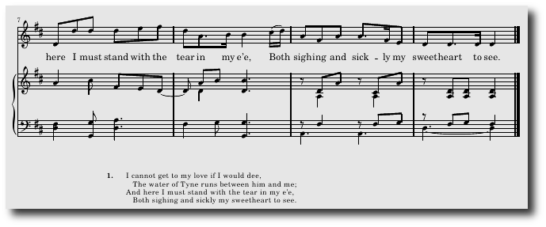
The Import
To get started, right click on this link and choose "Open with Rosegarden" from the context menu. Rosegarden can import the file right from the web! If that doesn't work for some reason, you may have to save it to disk, start Rosegarden, then load it manually. (Either File -> Load or File -> Import -> Import MIDI File will work equally well.)
As it happens, we hit a bit of a snag right out of the starting gates. This .mid file includes the lyrics, but doesn't supply any encoding information. Rosegarden thinks it includes foreign characters, and it wants our help guessing which encoding to use. In this case, Rosegarden has made the correct guess, and the text "e'e" (from the lyrics) displays legibly, so we click OK to continue.
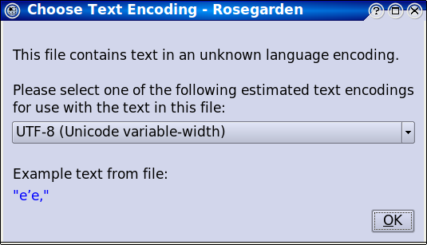
To get an idea where we stand now, type Ctrl+A to select all segments, then press N to open them in a combined notation view. (For this snapshot, I have dialed the Size combo down to 6, and Spacing to 30% in order to get an overview of the entire piece.)
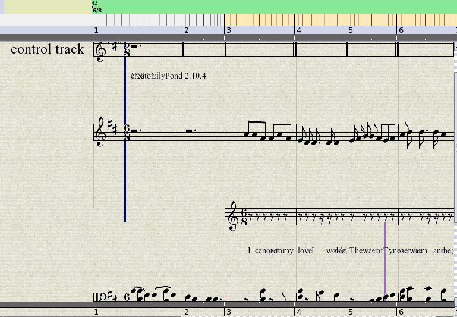
We have a bit of work to do.
Initial Cleanup
For starters, the "Control Events" track is useless for our purposes,
and it is causing some of these rendering problems. So step one is to
go back to the main window, highlight track 1, and hit the  button on the toolbar (or type
Ctrl+D). This will make the notation view evaporate, so don't be
alarmed.
button on the toolbar (or type
Ctrl+D). This will make the notation view evaporate, so don't be
alarmed.
The next most obvious problem is that the lyrics have imported as a separate segment on its own track, attached to rests. This should be merged with the flute track, so the lyrics will be attached to the correct notes.
The quick and precise way to do this is to go back to the main window, click on track 1 to make the larger selection evaporate, leaving only the flute segment on track 1 selected. Next, Shift+Click on the lyric segment just below it, so you have a combined selection:
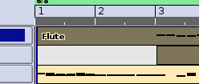
Now type Ctrl+J to join the segments, and merge them into one. Go ahead and delete track 2, because it is no longer necessary. You should be learning the drill by now, and realize what you need to do in order to view the results in another combined notation view. This is looking better:
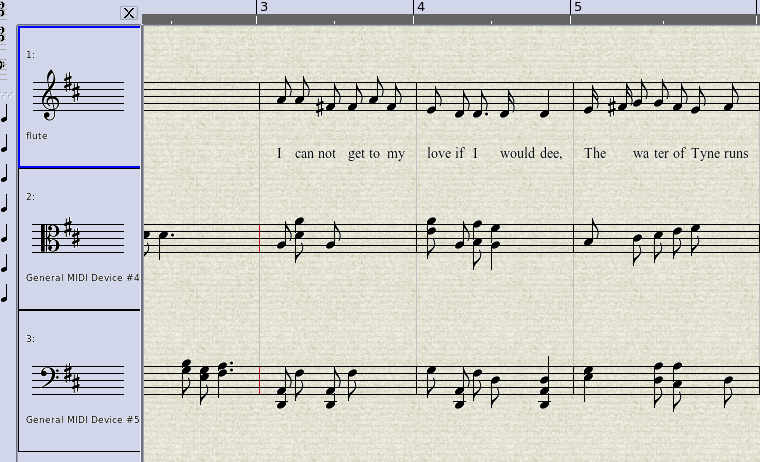
The Piano Jumble
Now we notice some more subtle problems. Some of the barlines are red, and Rosegarden's smart clef guessing feature has chosen a strange clef for the treble part.
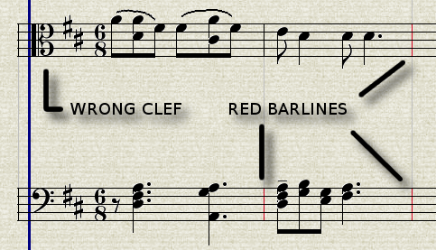
Clefs
We could simply double click the alto clef and change it to treble, but instead we're going to make this jumble even worse, so I can show you how to make it better. This imported example happened to have the two hands already split out into separate tracks, but if you record yourself playing such a piece on your own keyboard, you will wind up with all the events in a single segment. If you play this segment, it should reproduce your performance exactly, but Rosegarden's notation editor is not capable of doing anything pleasing with a part like this.
In order to demonstrate that, let's turn this into such a mess by selecting both piano segments, typing Ctrl+J to join them, and opening the result in a new notation view. The result is decidely ghastly to behold:
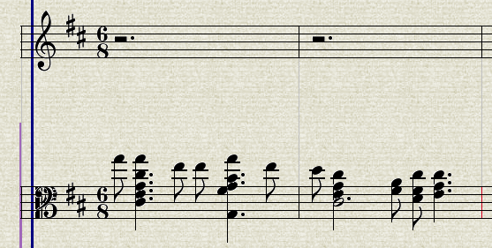
Split by Pitch
Rosegarden has no proper grand staff, so you must work with at least two segments, and at least two staffs to simulate piano notation. (We'll have more before this project is over. That's what the red barlines are telling us, but we'll get to that a bit further on.) In order to decompose this merged mess into a treble and a bass segment, select just the combined segment, and then use Segments -> Split... -> Split by Pitch. The defaults should be fine for our purposes:

You will wind up with the two segments overlapping on the same track, and may have the one called "(lower)" on top. If this happens to you...
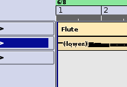
Simply drag it to track 3...
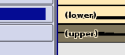
Then use the  toolbar icon to
move the entire track up, to put the "(upper)" part above the
"(lower)" one.
toolbar icon to
move the entire track up, to put the "(upper)" part above the
"(lower)" one.
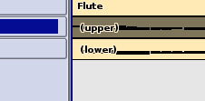
Now we're getting somewhere, but a number of problems remain:
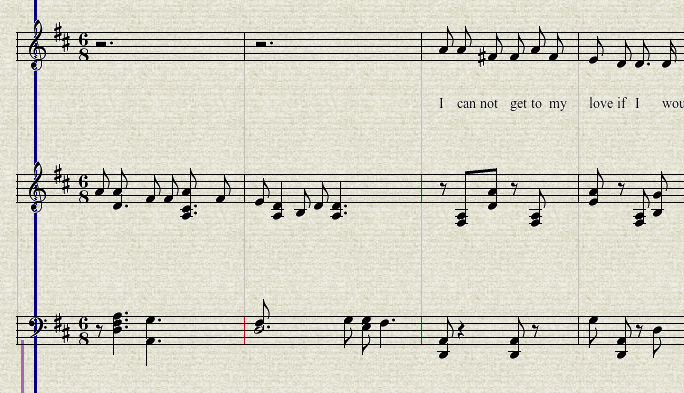
Pickup Notes
The next most serious problem here is that this entire piece is supposed to have a pickup of one 8th before the start of bar 1. We can see this clearly when looking at the original score:
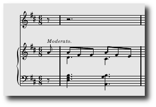
Rosegarden never imports this sort of thing correctly, and it has to be corrected manually. In order to avoid throwing the bar numbers out of sync with the original, we have to make the composition begin before bar 1 by using Composition -> Change Composition Start and End, and changing the start to 0.
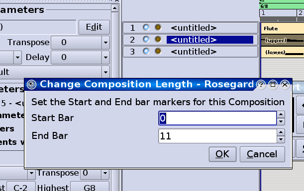
So to begin, we need to type Ctrl+A to select all of the segments again. It is possible to hold the Shift key while dragging the segments to avoid having them snap to whole beats, but I found it was virtually impossible to drag them so that they started precisely one 8th note before bar 1. If we don't get a really precise start time, there will be a cascade of obnoxious side-effects, as Rosegarden tries to compensate for bars that are a smidge off, for example trying to tie a 64th note from one bar to a string of dotted and tied mayhem in another, instead of drawing a nice quarter note. In the end, I decided to use Segments -> Set Start Time to get the segments started exactly on mark.
This piece is in 6/8 time, so there are two beats per measure, with each beat consisting of three 8th notes. We want to have everything begin precisely one 8th before bar 1, so we want to have the segments start in 0, in beat 2, and 16 64ths (8 64ths per 8th note times two 8th notes) to get this to come out correctly. In the following snapshot, I have already moved the segments, and have called the dialog a second time in order to demonstrate the numbers I used:
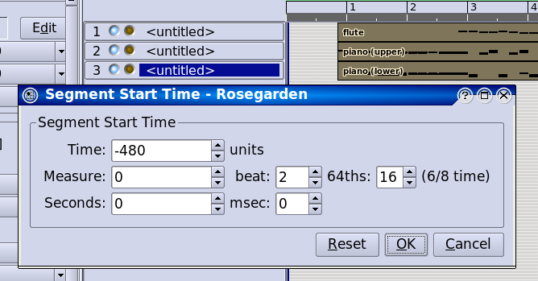
Next, we want to move the time signature back a bar. Double click the time signature in the ruler, which opens the Tempo and Time Signature Editor, then edit the existing 6/8 time signature, and shift it back one bar.
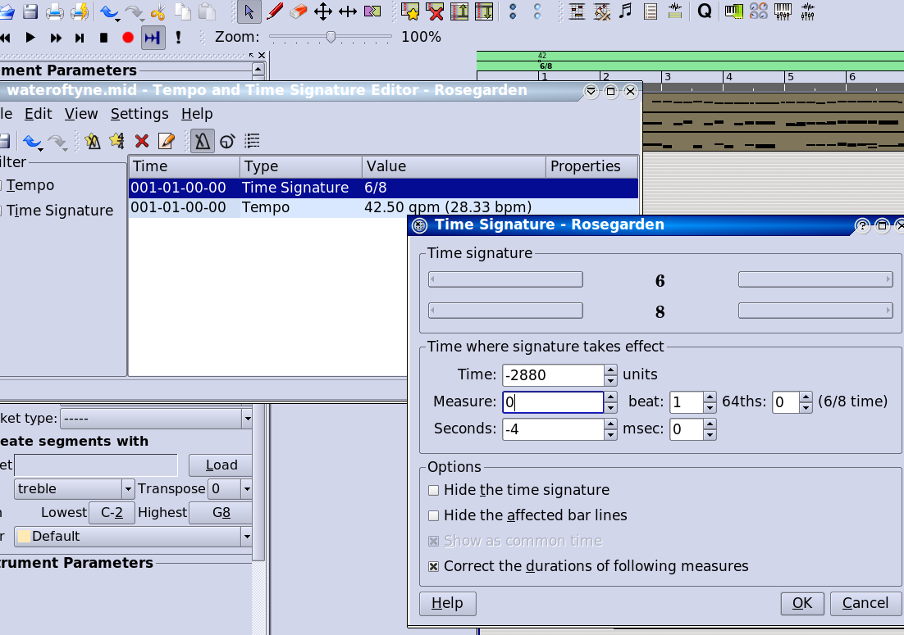
It seems Rosegarden refuses to move the original time signature, but instead creates a new one at the time we just specified. It winds up conveniently highlighted for deletion, so let's just remove it and continue.
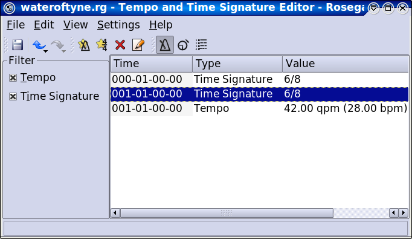
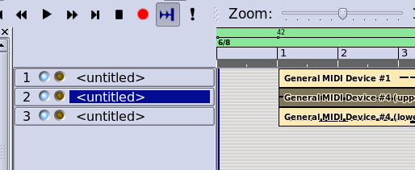
Next, the tempo needs to move to the beginning as well. There isn't any good way to capture this short of including a video clip, but if you simply click on the tempo mark on the ruler, you can drag it to the left here on the ruler itself, and avoid having to fiddle around with the tempo and time signature editor a second time.
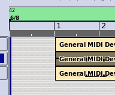
Now we type Ctrl+A and N to open another notation view, and see that Rosegarden has gotten confused about the rests in the melody part.
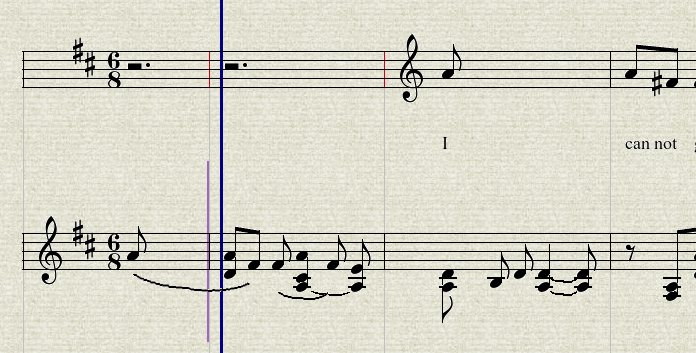
Triple click and Ctrl+N to normalize the rests, and we're almost there:
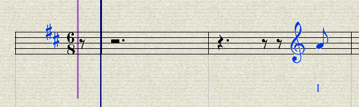
The clef here is apparently from the lyric segment, while the original clef from the melody segment has disappeared. Simply drag the clef to the left edge of the staff, and it should fall into the right place. (Be sure to cancel the original selection first, and move just the clef!)
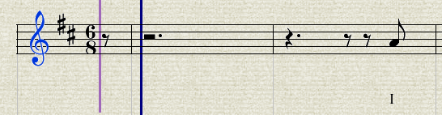
Now we want to match the rests as written in the original. First, click the quarter rest on the Rest Toolbar, and then click directly on the dotted quarter rest in beat 1. This converts that into a quarter with an 8th, and leaves two 8th rests preceding the 8th note in beat 2. Click the first of these 8th rests with another quarter, and now we match:
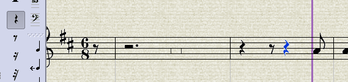 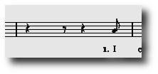
The Bad Thing About Voices
The bad thing about parts that have multiple voices running in the same line is that Rosegarden simply doesn't know what to do with them. The data imports (or records) into a state where the collection of events stored with the composition will reproduce the original performance exactly, but all bets are off looking at it as notation. In this example, this is where the red barlines are coming from, and the screwy business with all these weird ties and slurs that make no sense. They indicate that Rosegarden thinks there is more data in the measure than will actually fit, and this is because its counting is thrown off by situations like the first bar in the top piano segment.
Unfortunately, this is something we have to fix by hand. I can think of a number of strategies we might try, like splitting by pitch again, or going into a Matrix view to sort out which notes belong to which musical line, but there is no one simple fix, and we may have to use them all to sort this out.
The first voice problem occurs in the first full bar in the right hand part, where there should be two dotted quarter notes, and two sets of 8th notes in different lines. In addition, Rosegarden's automatic notation interpreter has inserted some slurs here that are not part of the original score. Finally, one of the dotted quarter notes in the top hand fell on the wrong side of the split divide, and needs to be moved to the left hand part. While we are in here, we will also add the missing Moderato to the right hand part (I went through this thing four or five times, and I still never put that Moderatointo any of them. Continuity errors are amusing., and this would also be the time to add in any missing dynamics, hairpins and such. Having an original score for reference is invaluable here.
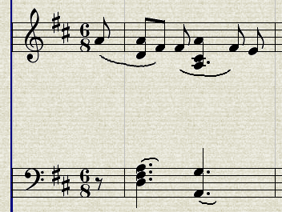 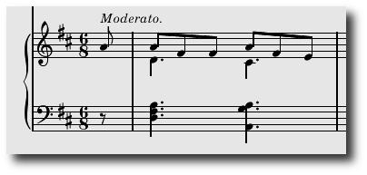
The easiest first step is to remove the slurs. You can click them one by one, or Shift+click each one in turn, then hit the Delete key in either case to remove the indication. A selection cannot span multiple segments, so you must select and delete the slurs within one part at a time. After you move to the bass part and click one of the slurs, the purple insertion cursor will follow you, indicating that the left hand part is now the active segment for editing:
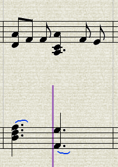
Next, we need to move the low A from the right hand part to the left hand part. I have made it to this point several times while updating this tutorial to account for changes in Rosegarden along the way, and I always wind up with something different here. Sometimes I get a dotted quarter note, as depicted below, and sometimes I get a quarter note tied to an 8th note. In either case, these represent the same single note, so select the note (or notes, not shown):
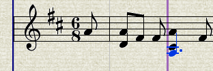
Now right click and pick Move to Staff Below from the context menu:
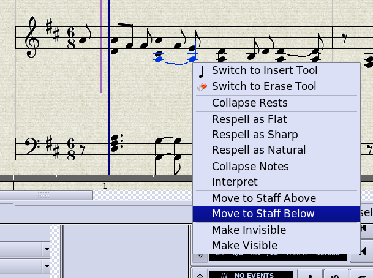
Now I will continue with my current running example, which has this and most other dotted quarter notes that fall on the second beat written as quarter notes tied to 8th notes. The note is in the right spot, and now we need to select this entire group of notes...
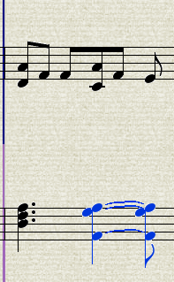
...and use Ctrl+= to collapse equal pitch notes...
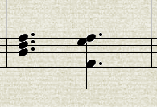
Now we need to deal with this voice business. After moving that note,
it's easier to see the other notes, and we can probably fix this first
incorrect measure without resorting to using the matrix view. So let's
start by adding a couple of scratch tracks with the  button, one for each piano hand:
button, one for each piano hand:
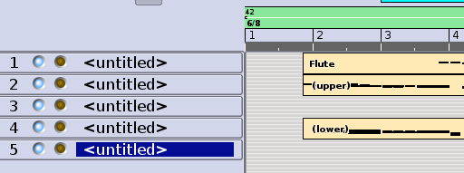
Now we want an extra voice for the alternate right hand piano notes.
This ultimately needs to occupy the same track as its companion, but it
will be easier to work with the segments on different tracks initially.
So use the  cursor to draw a new
segment in that first bar, on the track just below the right hand
segment.
cursor to draw a new
segment in that first bar, on the track just below the right hand
segment.
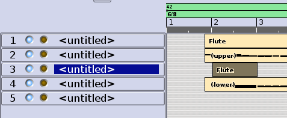
Now open both in a combined notation view by Shift+clicking both of these segments, and pressing N. Ignore the weird extra measures with double barlines to the right.
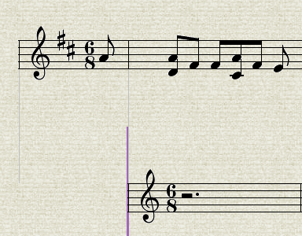
Now from here, the notes that are supposed to be dotted quarter notes in this hand probably have the correct duration, even though they appear to be 8th notes. If we select both of them...
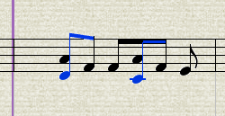
...then Move to Staff Below again...
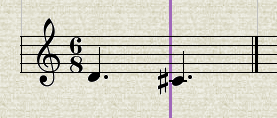
...the notes show their true duration, and we can move on. (This is several steps shorter than the first draft of this part of the tutorial, and we can thank Chris for saving us a lot of work here!)
Next, we want to flip the stems down for the bottom voice. Select both notes, and type Ctrl+PgDown to accomplish this.
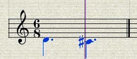
Since we will be exporting this to LilyPond anyway, it isn't critical
to fix the beaming. LilyPond, when left alone, tends to make better
automatic decisions than Rosegarden, and it can fix a number of problems
for free. However, we might as well go ahead and fix this while we're
here. If you select each group of three 8th notes in the top staff and
click the  icon on the Group Toolbar
to beam them, you should wind up with this:
icon on the Group Toolbar
to beam them, you should wind up with this:
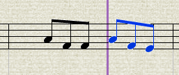
Next, we're going to scan ahead and the score, and find out where the remaining voice issues are in this top hand part. Luckily, there are only two more bars to deal with, the two before last:
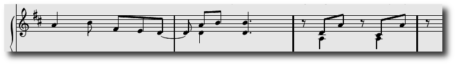
So we draw another segment where these notes need to go, select both it and the larger source segment...
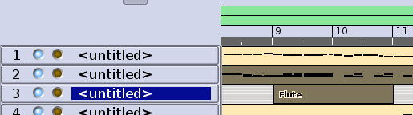
...and open these into a combined notation view, where we scroll to the end to see where they coexist:
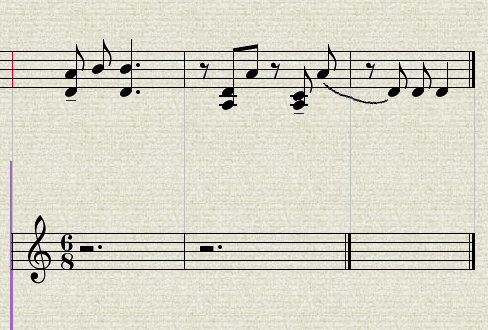
Now we're going to look at the source material, and decide what to put where. Everything below this red line needs to be in the alternate voice:
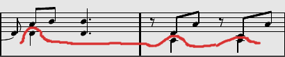
So we find the notes in question, and select them...
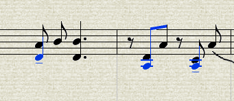
...then move them to the staff below (this new note moving feature just saved you several steps again)...
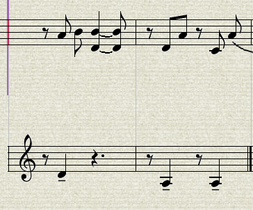
...and finally, we want to make the rests in this voice invisible by selecting them all, right clicking, and choosing Make Invisible.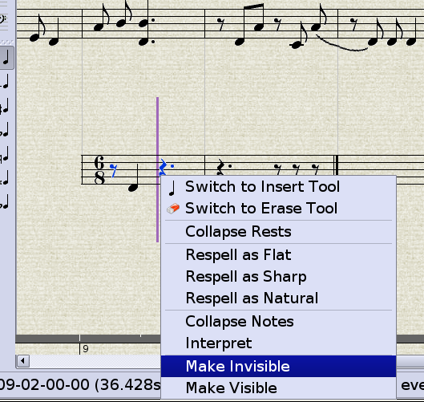
Continue in this fashion to complete this alternate segment, remembering to flip the stems down, and you should wind up with something that looks like this (except your version won't have the annoying extra time signature to deal with):
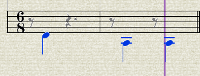
Go ahead and fix the beaming in the top part, and delete the unwanted slur. (There are other problems going back left of here, but we will make another pass later.)
Now we're going to close any open notation views, and step back to the main window, where we want to give the main right hand segment an alternate color, in order to better see what is where when we overlap them:
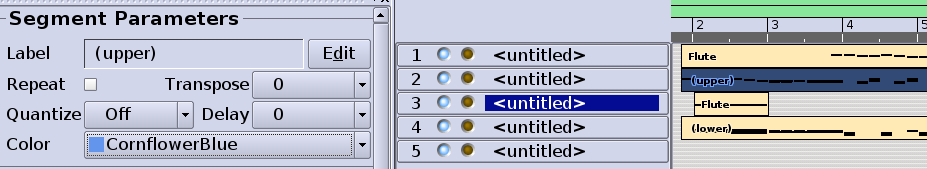
NOTE: Several users have asked why I recommend overlapping these segments, when it is so annoying to work with them this way on the segment canvas. There is a "merge tracks with same name" LilyPond export option that can yield the same end result with the segments spread out across different tracks, where they are easier to manipulate. I did not do it that way in this case, because the piano part uses treble and bass clefs, so the only way to use the merge function is to give them different names, like "Piano RH" and "Piano LH." Personally, I think this looks very stupid on the page, and I avoid editing LilyPond by hand whenever possible, so when I am in a situation that spans clefs like this, I work with the segments overlapped on the same track, and give each clef part the same name, like "Piano." It does turn out to be totally moot for this selected example though, because the original Mutopia score doesn't have labels for any of the parts, so I won't either. Oh well.
Now zoom out, click on on track 3, which will select both of its segments...
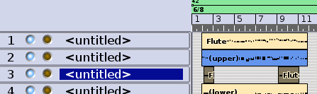
...and press N to open a double notation view. We still have to hide the clefs (and any key signatures, though there are none here) with the Make Invisible trick...
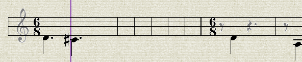
...and now we skip over dealing with the extra time signatures you still see in some of the images I recycled from the previous draft of this tutorial, but don't see on your screen, and move right along back to the main window, and carefully drag these segments up to track 2.
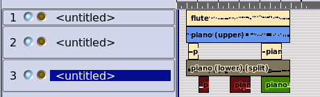
Track 2 expands to encompass both segments. (Also depicted, the same operation performed on what resulted in the bass segments merging onto track 3. A little continuity error due to Rosegarden continuing to develop during the writing of this tutorial.)
Then click on track 2 to select all of its segments, and press N to see the combined view:
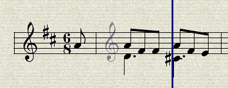
The first part looked good, but there are some problems toward the end that require additional cleanup (actually not this time through, but I will leave the next parts in here even if they don't happen to match what you might be looking at, because they show a useful feature):
In bars 9 and 10, it seems the rests have lost their invisibility, so we need to make them invisible again. We are editing a yellow segment, and if you look at the ruler, you see a band of yellow showing you where that segment is. It happens we are already in the right place to correct this, so select the rests, and make them invisible again:
Fortunately, one of the problems I noted earlier has corrected itself, and the note just to the left of here is now displaying correctly as two tied notes. Good. But moving left, there is an odd looking little construct caused by a long note that should have gone to the left hand part anyway.
Set up a combined view with that segment, then press Alt+PgUp or Alt+PgDown until the ruler turns blue, indicating that the longer segment is active.
Now you can get to the note to move it to the bottom part. Fix the beams, and you should see that we are making good progress:
Now there are a number of other notes in this right hand part that went the wrong way in the split, but it will probably be easier to move them accurately after sorting out the voice issues in the left hand part first. Continue in this same fashion, cleaning up any areas where voices overlap:
While I won't document this process of tweaking the voices on the lower staff step by step, I will mention that you will find it useful to change the clef in the Track Parameters box, so that the new segments you draw on track 5 will start off with the correct clef, sparing you the effort of changing it three times. You will need to add at least one key signature in one of the alternate bass voices, then hide it.
Next, there really are quite a lot of notes in the wrong hand here, to the point where it is almost too confusing to separate the voices out without also moving the notes from the right hand part down into this one at the same time, so I advise doing both operations in one pass. In fact, while I won't step back and rewrite this entire tutorial up to this point, I wish in retrospect I had paid more attention to the splitting. I might have gotten better results if I had tweaked the defaults in the split by pitch dialog, as it seems to have aimed a little too low in deciding which notes belonged to the right hand.
When you get to the last couple of bars, some notes need to move to the staff above. There is an issue with beaming, and if you wind up with a real beaming puzzle, try un-beaming everything, then re-beaming it manually. Finally, you wind up at a tie in the last note in the alternate voice for the bottom staff, which needs to be flipped down with Phrase -> Tie Position -> Tie Below...
Then you need to make sure the last alternate segment ends at the same time as the others. As when moving these at the start of this little adventure, the most precise way to handle this is to use Segments -> Set Duration and make sure it ends an 8th note early by setting it to 1:1:16:
In order to get both primary segments along with all five extra segments selected and opened in the same notation view at the same time, you will have to do a sweep selection by dragging the selection rectangle to collect all of them. The view will scroll when you get to the right edge, so keep dragging, or this piece is short enough that you can zoom way out, and grab it all on one screen. (Or I guess just use Ctrl+A like I suggested at the outset. Duh. Continuity errors are awesome entertainment, aren't they?)
The remaining corrections look worse than they really are, and go much faster when I'm not stopping every few seconds to deal with a new snapshot of my progress! I notice there are odd notes with tenutos from the import interpreter again. As there are not supposed to be any marks of any kind in this entire piece, the easy way to deal with these is to triple click and use Note -> Marks -> Remove All Marks on each staff in turn. (Save your work first. I got a random crash one of the times I did that, but I could never repeat it in order to try to document it and provide a stack trace.) We finally end up with a zoomed out segment canvas overview of the corrected piano parts:
And this is what it looks like in a combined notation view:
Finally, we can see how we're doing with the File -> Preview with LilyPond menu option. Make sure to pick "selected segments" from the options dialog here, and you will want to export lyrics, and possibly beamings.
This is a good time to edit the headers as well, on the Headers tab:

Exported beaming can have problems, and LilyPond's automatic beaming often gets the job right for free. This seems to be a problem case.
The Melody Line
It looks like some notes, such as the pickup note in the melody part, probably have the "beamed" flag set, even though the beam can't be drawn, because it spans barlines. (The beams came at import time, and then we moved the segments to the left to accommodate the pickup notes, you see. The beamed properties didn't go away. They just ceased to be appropriate.) The cure is probably to manually un-beam and then re-beam the offending notes. We can see an extra key signature in the melody part, that was originally in the voice that had the lyrics attached to rests. This has been invisible up to now because the Cancel whenever removing sharps or flats key cancellation option apparently does not work quite like I would expect. This is probably a bug, but Chris got kicked into high gear to fix a laundry list of complaints exposed by the first draft of this tutorial, and I have spent about as much time programming as writing myself, so let's just deal with this one as Rosegarden behaves now, and carry on.
The cure is simple. Open just the melody track in a notation view, and use the notation view's Settings... -> Configure Rosegarden which comes up right on the notation page. On the Accidentals tab, change to...
...then close this view, and open a new one for the setting to take effect. There the little rascal is. Delete it.
Now I suppose the beaming is enough of a mess that we really should fix all of it by hand. This is a short piece, and it won't be too painful. I decided to triple click and un-beam everything, then go back and put the beams in by hand, one group at a time. (Rosegarden's automatic beaming has been pretty sustantially broken for years. It has been slated for a rewrite since before 1.0, and I don't reckon Chris is going to get it done for this release either, so let's cope with what we have.) I just remembered that Rosegarden has more than one layout mode, and it will actually make it easier to do this, and to take screenshots if we switch to layout mode. Then select and un-beam everything...
Now go through and beam the correct groups (I should mention the Ctrl+B and Ctrl+U shortcuts) and throw in the missing slurs while you have notes selected anyway ( ) or ) to yield:
(You may want to tweak the beams in the piano parts as well. I will do that under cover of another montage. This time strains of Pink Floyd segueing into maybe some nice Wagner.)
Other Verses
Now we're ready to put the other verses in at long last. (I never got this far the first three times I worked through this tutorial.) Go to View -> Open Lyric Editor to open this dialog:

Now we'll want to add the second and third verses on new tabs. Click the button, and you get a new blank page:
I don't know why it starts at [0] then skips to [2]. I don't want to know. You don't want to know. It undoubtedly has something to do with the pickup note business, which challenged a couple of Rosegarden's fundamental design assumptions, and is frankly rather precarious. Let's just keep our fingers crossed, whistle, and look straight ahead while we enter the second verse into the dialog. This proved tricky for me, since the original Mutopia file has the alternate verses as plain text at the bottom, and I don't deal with songs much. I tried, fair lady Odinsdatter, but I have a strong suspicion that I have mangled this somewhat. My verse doesn't look right, and I don't think it is Rosegarden but my own incompetence to blame here:
Under the circumstances, I won't torture myself, or you, by wrecking the third verse. Let's see what we have in just this part at this time, with another LilyPond preview:
To my relief, it seems to match the Rosegarden version anyway. I won't push my luck with lyrics any further. I suppose I should have read the manual to refresh my memory on how the lyric editor is supposed to work, but I'm sorry, O user, lyrics have never been my thing, ever, and this is the best your friendly neighborhood volunteer can muster in this area. Pathetic, isn't it?
Wrapping UP
After the little montage where I corrected the beams in the piano parts, we are almost finished here. The lyrics are mangled, but that is my fault, not Rosegarden's. All we need to do now is create the { } brackets for the grand staff...
(see the Fidelio tutorial for much more detail about the new staff bracket export feature)
Now we only have one ugly problem to sort out. The rests in the final couple of bars. LilyPond wants to draw them below the staff, and that might require hand editing to correct.
(I forgot to fix the stem directions when I did my re-beam marathon in the montage too. I don't think that was Rosegarden's fault.) What I have in mind here is to spread the bass piano part back onto two tracks...
...then cut them both at bar 9, and flip them...
Now go back through everything to check stems and hidden rests and so on, and put it all back together, and see what we get. Well, it wasn't worth the effort, but it did help a little:
UPDATE: I will leave the above in for continuity, so I don't have to start my file from scratch again, but the segment flipping nonsense probably isn't helpful. It just randomly helped LilyPond come closer to resolving an impossible situation in one of the three cases. The real answer is to reposition the rests in Rosegarden, and get that exported. Read on.
Finale (Part Uno)
This was the result I got when I previewed the final version of my Rosegarden file. It still requires some hand cleanup, and there might even be bugs at play here, but I'm going to go put on my cheap truckstop Indiana Jones hat and disappear into the woods for a couple of hours.
Finale Part Deux
OK, never say never, right? I was so close. So let's finish this monster, shall we? I couldn't figure out how to hide key signatures in LilyPond, so I altered the export engine to ignore them completely. This could go wrong, but in practice, why else would you want to hide a key signature? It fixes this test case anyway, and hopefully solves a problem that was bugging Kevin Donnelly as well. No more screwy key signatures. What else? The stupid rests.
You listening Chris?
Finally, after I sort this, I'm going to make an attempt at jiggling time signatures in such a way as to get rid of those last 8th rests we don't want. A composition can't be less than a full bar, and the LilyPond export pads out short bars for some good and logical reason, but there isn't any way to turn that off in this case, and that makes the last rests impossible to abolish. Hrm.
So much for never revisiting any of this.